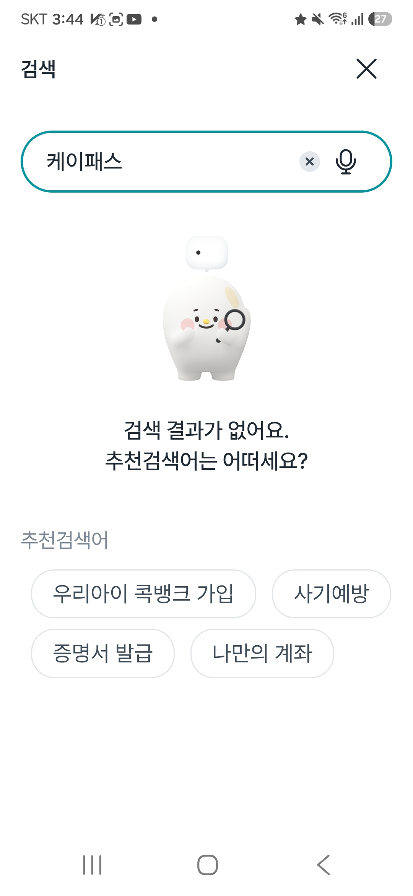
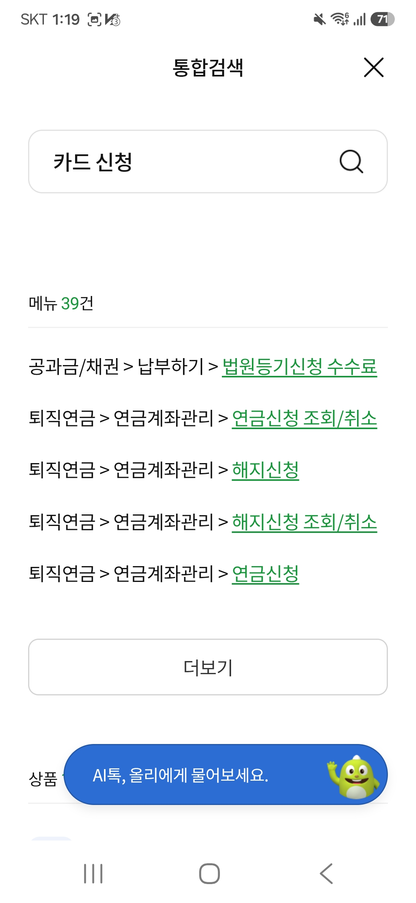
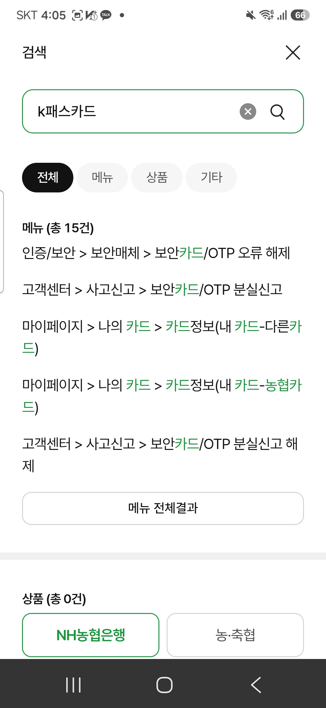
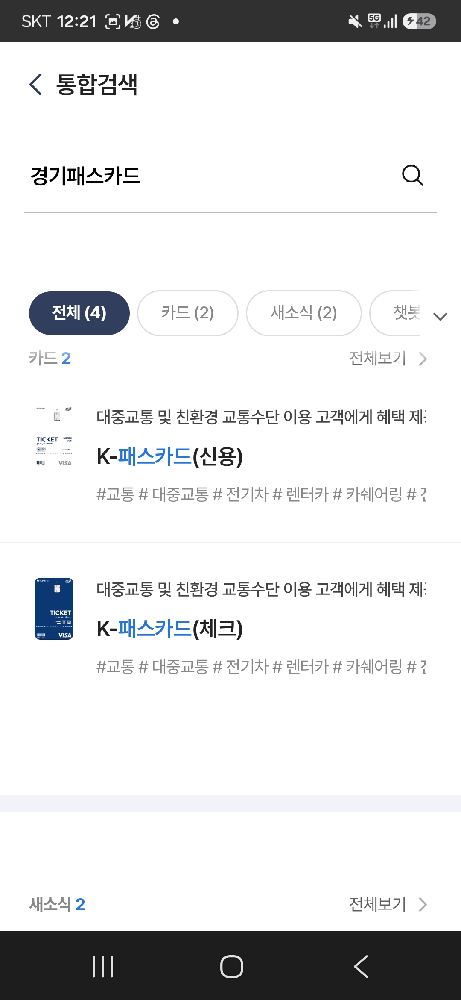

나만 그런 게 아니었다
1명앱을 먼저 여는 15명 중 담당 앱(NH Pay)을 고른 사람
7명같은 15명 중 담당 앱이 아닌 것을 고르고 확신도 4~5
39건올원뱅크 "카드 신청" 검색 결과 — 법원등기 · 퇴직연금
오늘은 여기서 어디까지 갔는지, 그 과정을 말씀드립니다.
안내가 실제로 사용자를 돕는지는 아직 재지 못했습니다.
같은 목적, 앱마다 다른 결과

NH콕뱅크결과 0건“케이패스”

NH올원뱅크39건 전부 무관“카드 신청”

NH스마트뱅킹상품 0건“k패스카드”

NH Pay정확히 매칭“경기패스카드”
2026-08-18~20 · 직접 검색해 기록한 실제 화면